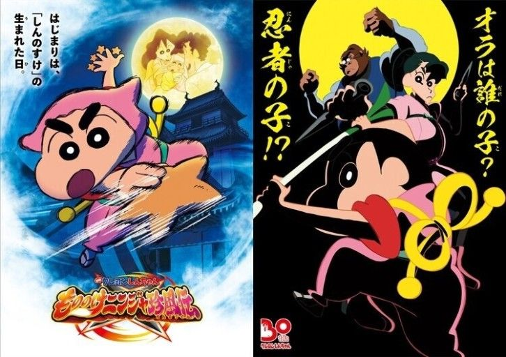
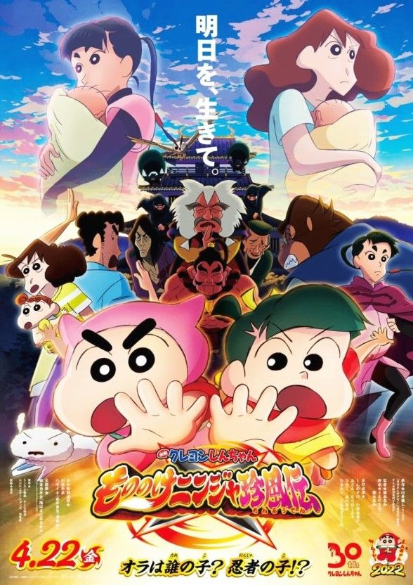
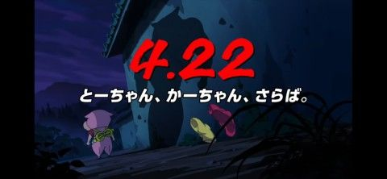
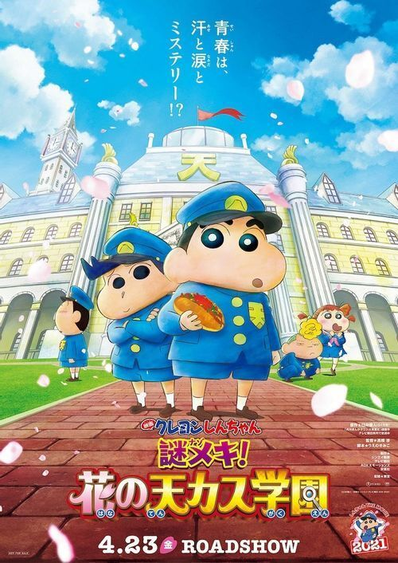
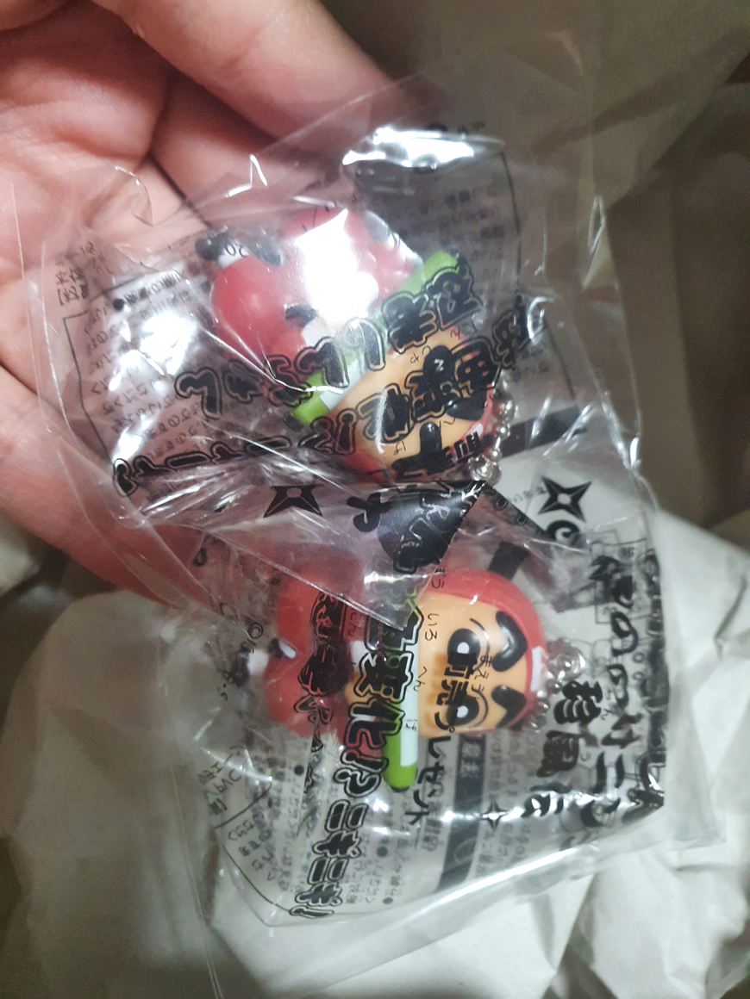
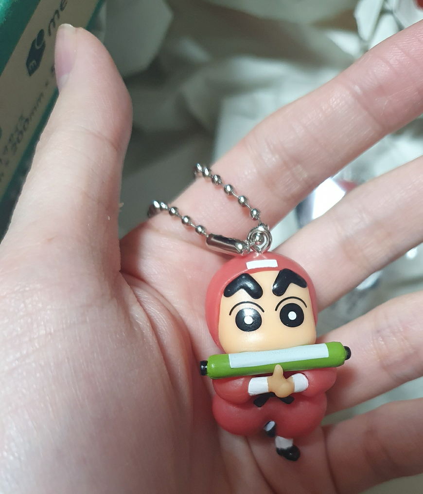
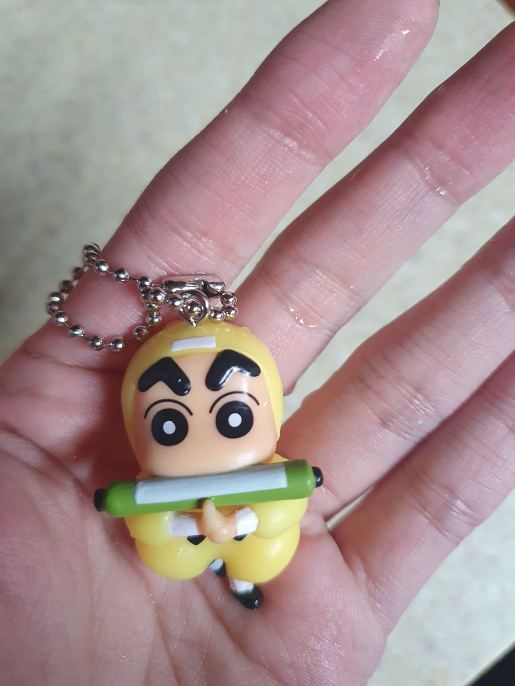

짱구 극장판 30기 '모모노케 닌자 진풍전'이 4월 22일 일본에서 개봉합니다.
줄거리 개요:
비오는 날 아빠 신영식과 엄마 봉미선의 사랑스러운 아기가 태어났다.
아빠가 생각한 이름의 메모는 젖어 거의 읽을 수 없게 되었지만, 읽을 수 있는 글자만 더해 보면 「신...짱...구」.
그로부터 5년, 짱구네 집에 1명의 여성이 방문하고 신랑감을 자처하는 그 여자의 입에서 믿을 수 없는 말이 나온다.
"제가 짱구의 친부모예요."
신영식과 봉미선은 당황해 하면서도 가진 것도 없는 신부를 되돌려 보낼 수도 없어서 그날은 짱구네 집에 묵기로 한다.
하지만, 그날 밤 갑자기 수수께끼의 닌자 군단이 덮치고 눈 깜짝할 사이에 여자와 짱구가 끌려가버렸다!
과연 신짱구의 운명은?
진정한 가족이란 것은 과연!?
(특보1)
(특보2)
(메인 예고편)
현재 한국은 28기 낙서왕국까지 개봉되어있기때문에 빨라야 내년은 되어야지 30기를 볼 수 있을 것 같습니다.

(엄마, 아빠, 안녕.)
또 윗짤때문에 30기가 마지막일지도 모른다는 떡밥들이 돌기도 합니다.(어그로일 확률 99퍼)
위의 얘기는 영화 소개였고 다른 얘기를 좀 해보겠습니다.
짱구 극장판은 개봉할때마다 선예매 특전이 있습니다.

29기는 물에 적시면 그림이 나오는 손수건이었습니다.
이번 30기는 온도에 의해 색이 변하는 키링입니다. 너무 귀엽죠?


네. 너무 귀여워서 사버렸습니다.

짠! 색도 바뀝니다. 체온에 의해서는 바뀌지 않고 뜨거운 물에 넣으니 즉각 색이 바뀝니다.
소개하려고 글쓴게 아니라 사실 특전 샀는데 자랑할 곳이 없어서 썼습니다. ㅎㅎㅋㅋㅈㅅ;;

(댓글에 특전 구매사이트 적어놨습니다.)
후원댓글 9개
댓글 9개 ▼